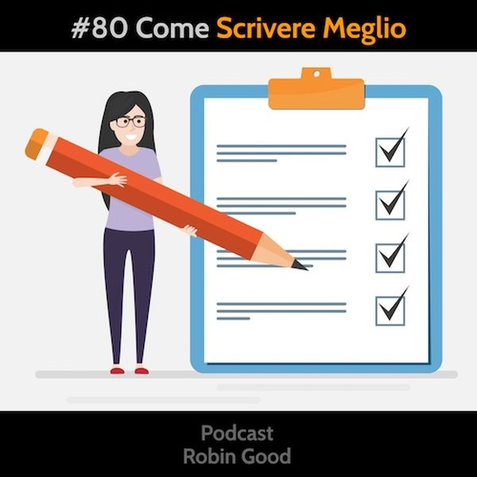

Come Scrivere Meglio

Scrivere. ...e che problema c'è? Mi sento rispondere il più delle volte, quando faccio notare a un mio cliente, che è necessario cominciare a preparare contenuti di valore.
I più, di coloro che non lo hanno mai fatto in maniera sistematica, pensano che lo scrivere sia una competenza che loro hanno già coltivato e acquisito da lungo tempo. Talvolta riconoscono di non aver avuto molto tempo per continuare ad allenare questo skill dopo l'università, ma in generale la stragrande maggioranza degli imprenditori con cui lavoro sanno sì scrivere, ma non lo hanno mai fatto per comunicare, per raccontare o emozionare altri.
Hanno fatto preventivi, hanno preparato sintesi di riunioni, piani di fattibilità, fatture e mail in gran quantità. Ma non hanno mai veramente scritto nulla con l'intenzione di comunicare le loro idee, o le storie che coinvolgono i loro prodotti e i loro clienti.
E quindi, quando si trovano a dover scrivere per la prima volta qualcosa di spessore, si impantanano come un TIR nelle sabbie mobili. Il brutto, è che più spesso che no, non se ne rendono neanche conto. Affondano nelle sabbie mobili ma la loro sensazione è quella di andare in autostrada a velocità di crociera.
Il problema è che il saper scrivere bene, così come qualsiasi altro skill complesso, richiede un allenamento costante. Ciò che abbiamo imparato a scuola e poi all'università, va rivisto, trasformato e aggiornato alle esigenze odierne.
Il primo passo è quindi - come per i video, o i podcast - di allenarsi costantemente, non compiacendosi e adagiandosi sul minimo comun denominatore di qualità, ma mettendosi in discussione, affrontando le cose con umiltà, facendo domande e cercando di migliorarsi ad ogni passo.
Alcuni consigli pratici, che ti possono essere utili in questo percorso di apprendimento:
1) Scrivi tutti i giorni. Basta una paginetta.
Può essere un diario, un blog, una serie di piccoli racconti. Non ha bisogno di essere pubblico, ma è meglio se lo è.
2) Allenati a sintetizzare.
Parti da cose interessanti che ti appassionano, e di cui altri parlano o scrivono. Allenati a sintetizzare in pochi paragrafi ciò che loro dicono in più pagine.
3) Fai prima uno schema. Poi scrivi.
Butta giù un indice, una lista di punti, di titoli, di argomenti che faranno parte del tuo testo, così da attraversare mentalmente ciò che desideri scrivere, scomponendolo in una struttura logica.
4) Rileggi ad alta voce. Ascoltandoti.
Sì, rileggere è importante, ma ancor più decisivo è il rileggere "ascoltando" e cercando di sentire come suona ciò che hai scritto, quando lo reciti ad alta voce. Suona accademico, freddo, incollato? Allora vuol dire che c'è da lavorarci ancora.
5) Confrontati.
Alleati con qualcuno disposto a rileggere i tuoi testi e a darti feedback spassionato. Confrontati con chi potrebbe essere un reale, possibile lettore. Non ti fidare solo delle tue auto-valutazioni. Verifica e mettiti in discussione chiedendo feedback ad altri.
6) Leggi.
Più roba buona leggi e più stimoli e riferimenti utili avrai nella tua testa quando si tratta di scrivere e comunicare i tuoi concetti e le tue storie in maniera chiara, immediata. Quindi il consiglio è quello di leggere "roba" di alta qualità. Scopri chi è che sa scrivere in maniera eccellente e comincia a seguirlo. Spendi due soldi su Amazon e riprendi a leggere libri fisici e non solo articoli online.
7) Scrivi come parli.
Allenati a scrivere in maniera informale, diretta e utilizzando termini di tutti i giorni, così come fai abitualmente quando parli con qualcuno che conosci e che ti è seduto davanti. Per riuscire in questo esercizio, immagina - mentre scrivi - di avere davanti a te una persona che conosci realmente e prova a scrivere ciò che gli diresti a voce per comunicargli la tua idea/storia.
8) Fai un corso.
Tanto male non può fare. Ma non prendere il primo che capita. Chiedi in giro a chi ne ha già fatti e senti campane diverse, non la prima che incontri. Studiare in maniera strutturata, facendo parte di un gruppo dove ci si può confrontare, e apprendere gli uni dagli altri, è sempre un'esperienza utile.
-------------
Risorse
• Alessio Beltrami - Content Marketing Italia
https://contentmarketingitalia.com/
• Beltrami su Telegram: https://t.me/cmi99
• Podcast: https://itunes.apple.com/it/podcast/content-marketing-italia/id1062518390
-------------
Info Utili
• Ascolta e condividi questo podcast:
https://gopod.me/RobinGood
• Dammi feedback:
critiche, commenti, suggerimenti, idee e domande unendoti al gruppo Telegram @RobinGoodPodcastFeedback.
• Diventa sostenitore:
esprimi la tua soddisfazione e incoraggiamento diventando anche tu un sostenitore attivo di questo podcast qui: www.patreon.com/Robin_Good
• Rimani aggiornato:
https://facebook.com/RobinGoodItalia/
• Conoscimi meglio:
attraverso la newsletter settimanale.
Contiene mie storie personali e riflessioni
e tre nuovi tool utili per chi comunica online:
http://robingood.it/toptools-newsletter
Per qualsiasi richiesta scrivi a:
Ludovica.Scarfiotti@robingood.it
Musica: "Hold Please" by Bonus Points - disponibile su Bandcamp: https://chillhop.bandcamp.com/track/hold-please